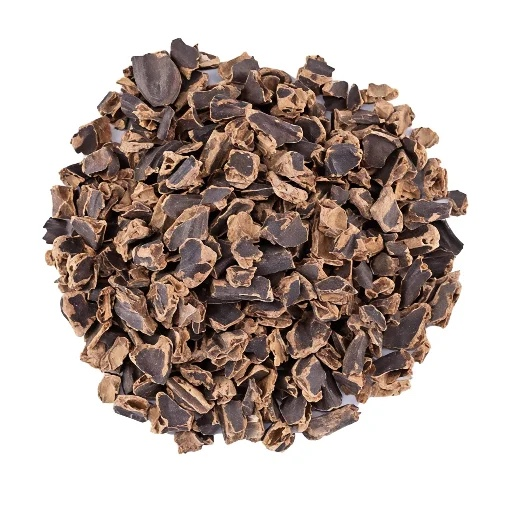

Pulpe de caroube
Riche en sucres naturels et fibres, énergie pure pour l'élevage et l'industrie
Riche en sucres naturels et fibres, énergie pure pour l'élevage et l'industrie
La pulpe de caroube est obtenue après extraction des graines des gousses sélectionnées. Riche en sucres naturels (saccharose, glucose, fructose) et en fibres solubles, elle constitue un complément énergétique de premier choix pour l'élevage ainsi qu'un ingrédient fonctionnel apprécié dans la nutrition humaine et sportive.

Spécifications techniques
| Humidité | ≤ 8 % |
| Teneur en sucres | 40 – 50 % |
| Fibres totales | 30 – 40 % |
| Forme | Granulés ou en poudre |
| Granulométrie | Fine < 4 mm, Médium 5-10 mm, Cube > 10 mm |
Conditionnements
Sacs de 25 kg ou 50 kg, big bags de 500 à 1 000 kg, stockage en lieu sec et aéré.
Applications
Élevage
Substitut naturel à la mélasse, apport énergétique pour bovins, ovins et caprins.
Alimentaire
Ingrédient naturel sucrant dans les confiseries, barres céréalières et boissons.
Nutrition sportive
Source d'énergie à absorption progressive, sans gluten et sans caféine.